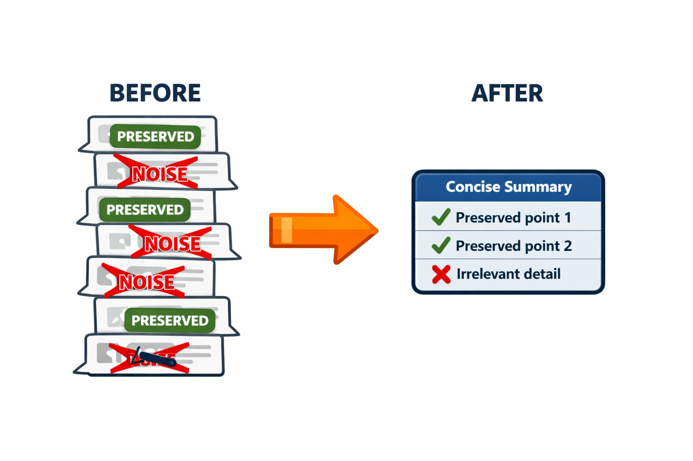

class: center, middle, inverse count: false # Implementing Selective Preservation ??? ~15 minutes. Builds directly on Lecture 7.1 — same hook point, same API constraints, different selection logic. --- # When Sliding Window Drops Too Much A coding agent session: at message 3, the user said: > "We deploy with Docker, not systemd." Twenty messages later, sliding window has dropped that constraint. The agent now writes a systemd unit file. Sliding window treats every message as equally disposable based on age. That is wrong. ??? 30 seconds. The deployment-constraint example is concrete. Students will see this exact failure mode if they only implement sliding window. --- # Three Categories Worth Preserving .split-left[ 1. **Structural anchors** — the original task, framing the session 2. **Decisions and goals** — committed plans, mutating actions, user-stated constraints 3. **Recent exchanges** — the last few messages, regardless of content Sliding window already handles category 3. Selective preservation adds 1 and 2. ] .split-right[ <p></p> ] <div class="clear"></div> ??? The categories give students a concrete framework. Each one maps to a specific failure mode of sliding window. The BEFORE side of the image (from Lecture 4.2) is exactly selective preservation — some messages preserved, others dropped as noise. The AFTER side previews compaction, which the next lecture covers. --- # Why Not Keep Everything That Looks Important Categories 1 and 2 grow over time. A long session accumulates dozens of decisions. Two responses: - **Set a cap** — keep at most N important messages, drop the oldest first - **Reach for compaction** — when the kept set itself is too large, synthesize instead of select Selective preservation works for sessions with a few dozen decisions over hundreds of messages. It does not scale to hundreds of decisions. ??? The cap discussion previews the limit of the strategy and motivates compaction. --- # Heuristic Tagging Classify messages from their structure alone — no extra metadata. 1. **First user message** — always preserve (the anchor rule from 7.1) 2. **Assistant messages with mutating tool calls** — `edit_file`, `delete_file`, `mkdir`, `run_command` 3. **User messages with constraint patterns** — "we use", "must", "always", "never" (best-effort) The mutating-tool rule is the strongest signal. Read-only calls (`list_files`, `read_file`) are not preserved — their results can be re-fetched cheaply. ??? The mutating-tool rule is reliable. The keyword rule is fragile and students should know that going in. --- # Heuristics Have Limits A user message that says "the new release uses Python 3.12" doesn't match any keyword pattern reliably. A constraint stated mid-sentence will be missed. .callout[Heuristics are a floor, not a ceiling. They preserve obvious decisions cheaply and let you catch the rest with explicit tagging.] ??? Don't oversell heuristics. They handle the common cases; explicit tagging handles the rest. --- # Explicit Tagging Add a flag to the message at creation time: ```python messages.append({ "role": "user", "content": "We deploy with Docker, not systemd.", * "important": True, }) ``` The Anthropic API ignores extra keys. The flag is for the truncation function, not the model. ??? Show the syntax. The `important: True` key is invisible to the model and to the API. It only matters to the context-management code. --- # Two Sources of Explicit Tags **From the agent code** — at known checkpoints - After a destructive operation succeeds - After the user explicitly confirms a plan - After compaction completes (preserves the summary) **From the agent itself** — give it a `mark_important` tool - Adds a small system-prompt cost - Lets the model classify on its own judgment - Worth it for long-running sessions ??? 60 seconds. Two design choices with different tradeoffs. Code-driven tagging is reliable but rigid; model-driven tagging is flexible but costs tokens. --- # Two API Constraints, Reused Both constraints from Lecture 7.1 apply here. - **Pair integrity** triggers more aggressively. Every kept message brings its `tool_use` / `tool_result` partner. The `find_pair_partner` helper makes the rule explicit. - **Alternating roles** triggers more often. Selective preservation pulls a non-contiguous subset, so adjacent same-role messages are the norm — for example, the anchor (user) followed by an explicitly-tagged constraint (user) with the assistant turn between them dropped. The `ensure_alternating_roles` pass from 7.1 is reused unchanged. ??? Both helpers are properties of the messages array, not of any particular strategy. Lab 5 will pull them into a shared module. --- class: center, middle # Let's build `selective_preservation.py` ??? Walk through the file. Order: the three classifiers (`is_anchor`, `is_mutating_assistant`, `is_explicitly_tagged`), then `find_pair_partner` (the new helper), then the main `selective_preserve` function that ties everything together and ends with an alternating-roles pass. --- # What the Demo Shows 14-message conversation with two user messages explicitly tagged. | Sliding window (n=4) | Selective preservation (n=4) | |---|---| | Drops messages 0–9 | Keeps 0, 3, 6+7, 10, 11+12, 13 | | Loses original task | Anchor preserved | | Loses both constraints | Both `important` constraints preserved | | 4 messages | 8 originals + 2 synthetic acks = 10 messages | Selective preservation costs more messages (10 vs. 4) but preserves everything that mattered. ??? 60 seconds. The numbers and the contrast tell the story. The trade-off: more tokens kept, but the agent doesn't lose its constraints. --- # The Limits of Classification Both sliding window and selective preservation are **subsetting** strategies. They keep some messages and drop others — they never combine, summarize, or rephrase. Subsetting fails when: - The set of important messages is too large to keep - Important information is spread across many messages - A kept message depends on dropped context to make sense When subsetting fails, the answer is **synthesis** — have the model summarize. That is compaction. Next lecture. ??? Frame compaction as the strategy that fills the gap. All three exist for different reasons. --- # Key Takeaways 1. **Three categories matter** — structural anchors, decisions and goals, recent exchanges 2. **Heuristics are the floor** — mutating tool calls and the first user message, free and automatic 3. **Explicit tagging is the ceiling** — precise but requires foresight or a tool 4. **Same API constraints, more triggers** — `find_pair_partner` for pair integrity, `ensure_alternating_roles` from 7.1 for the role rule 5. **Selection has limits** — when important content grows too large or depends on dropped context, compaction takes over